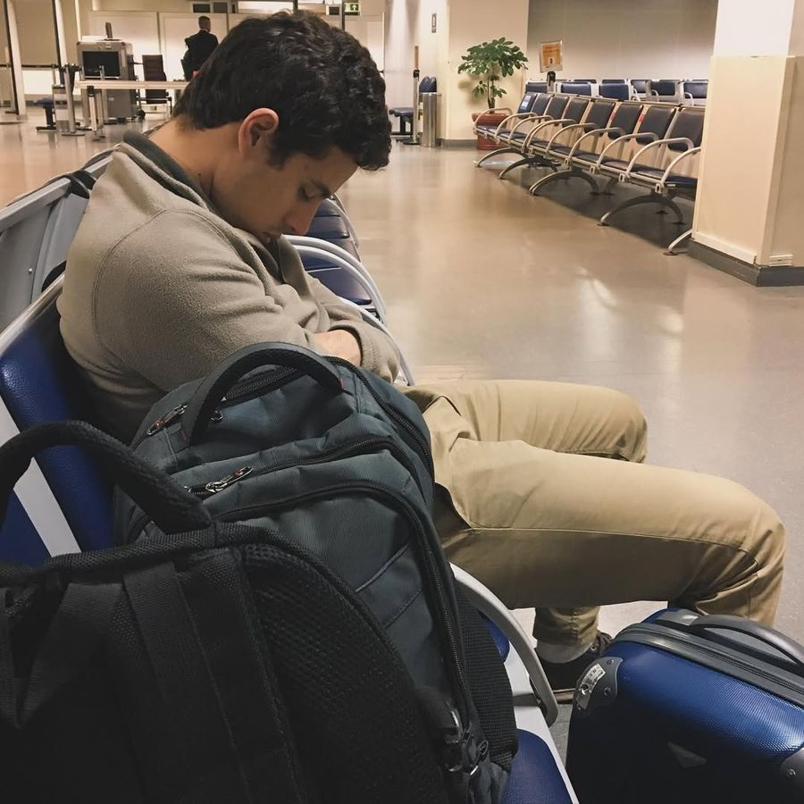
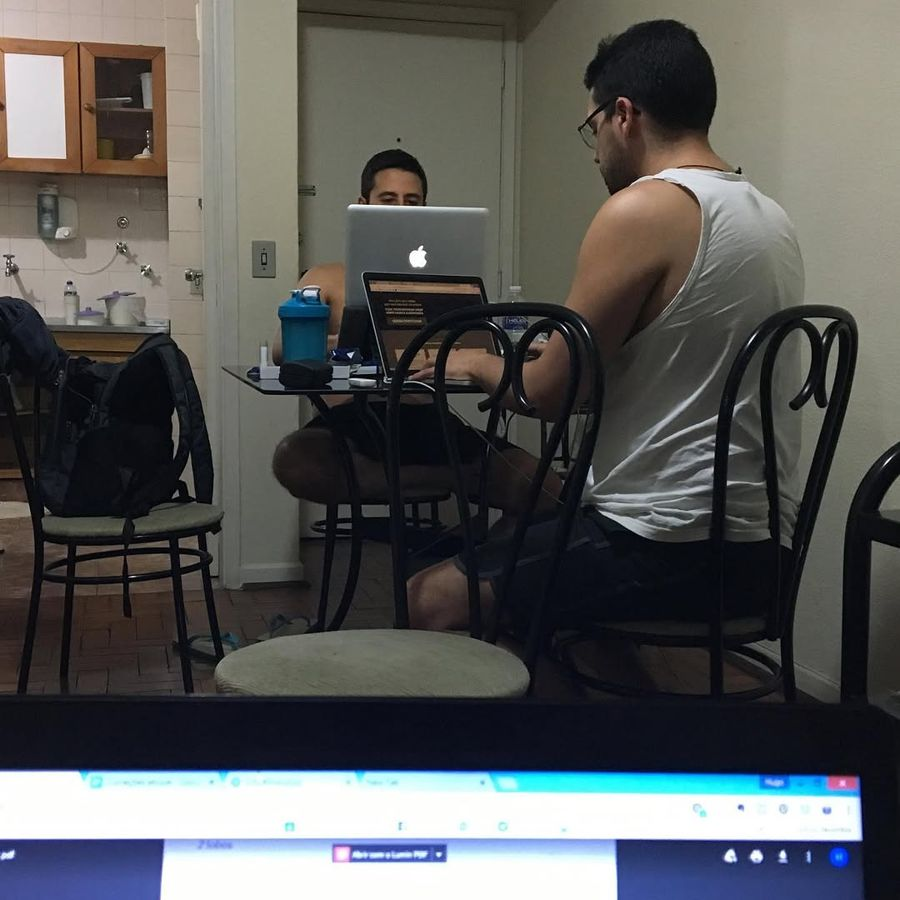
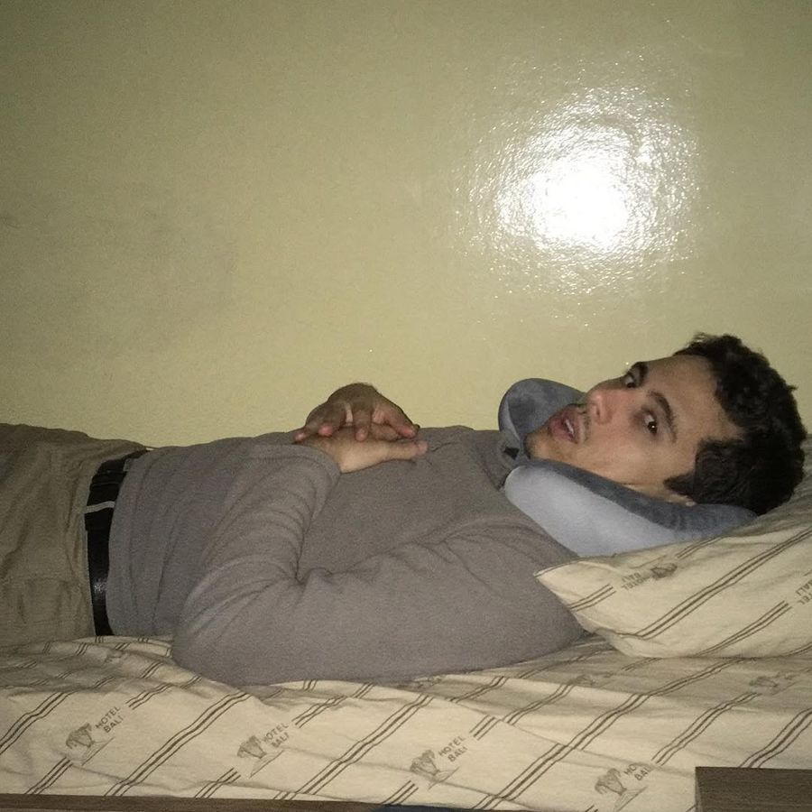
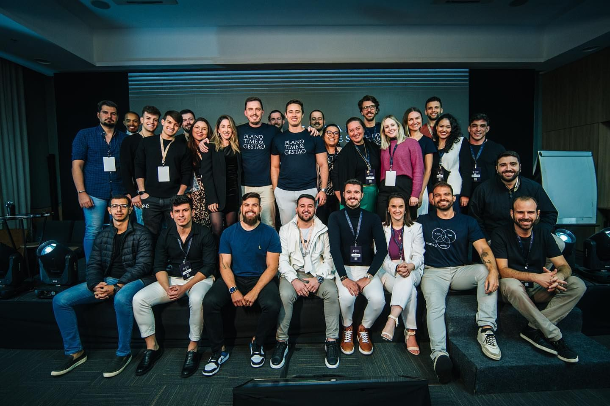

01 / 03
Diagnóstico de Base
Quem já entrou e quanto vale
Compradores, leads, canais, histórico, margem e capacidade de entrega. A conta feita com os seus números.
Base Money
A estratégia para quem faz Direct Response e e-commerce: uma ação interna de baixo esforço para vender de novo a quem já comprou ou já levantou a mão.
↓ role para ver como funciona
Existe uma oportunidade
Depois da primeira compra, compradores e leads saem do calendário. Quando a empresa precisa vender mais, compra atenção nova outra vez. Quem já entrou no seu funil continua lá, esperando uma próxima proposta.
A operação que recomeça
O próximo resultado depende de mais gente entrando pela porta da frente.
A operação que volta à base
Compradores e leads já adquiridos recebem uma oferta pensada para o momento em que estão.
Pra quem é
Faz sentido quando
Ainda não faz sentido quando
A solução · Base Money
Eu conduzo as decisões e reviso os pontos críticos. O seu time coloca de pé, em cerca de 45 dias.
01 / 03
Compradores, leads, canais, histórico, margem e capacidade de entrega. A conta feita com os seus números.
02 / 03
Quem recebe a proposta, qual oferta, em que condição, com que mensagem e em que calendário.
03 / 03
Reviso os ativos antes de ir ao ar e, no fim, leio vendas, custos, margem e resposta por grupo.
Quem sou eu
Dez anos de digital, em quatro fases. A última virou o Base Money.
Entrei em 2016 com congressos online. Foram três anos, R$ 3,5 milhões acumulados e mil reais por mês de retirada, virando noite atrás de noite para colocar lançamento no ar.
Os números são soberanos sobre a sua paixão. Esforço não é resultado.

Um médico com quase 900 mil inscritos vendia R$ 700 mil por ano em e-book. Viramos curso, montamos tráfego e operação, e nasceu a Vitascience. Em 2021, R$ 37 milhões.
Errar no time é a pior coisa que você vai cometer na sua jornada.

Janeiro de 2021: 600 mil leads, R$ 1,2 milhão em anúncio e R$ 115 mil de prejuízo. Em 2022, o pior ano, com receita caindo e demissão. Foi quando paramos de voltar ao tráfego frio e passamos a vender de novo para quem já tinha comprado.
Quanto mais você demora para assinar o atestado de incompetência, mais rápido assina o atestado de óbito da empresa.

Time enxuto, 100% remoto, sem depender de mim na operação. Em 2025, o maior ano da história: R$ 71,5 milhões. Mais de R$ 100 milhões vieram de quem já era cliente.
A próxima venda já estava em casa.


R$ 277 milhões com uma empresa só.
Vendas pela internet, por ano · R$ milhões
Papo de Bastidores · o podcast
59 episódios. Mais de 40 convidados que, somados, passam de R$ 1 bilhão em faturamento.
Primeiro passo
A triagem verifica se a operação tem oferta, contatos alcançáveis, margem, capacidade e uma pessoa responsável pela decisão. O investimento é definido depois dela.
 Alan Nicolas
Alan Nicolas Malves
Malves Finn Puklowski
Finn Puklowski Ramiro Gomes Ferreira
Ramiro Gomes Ferreira